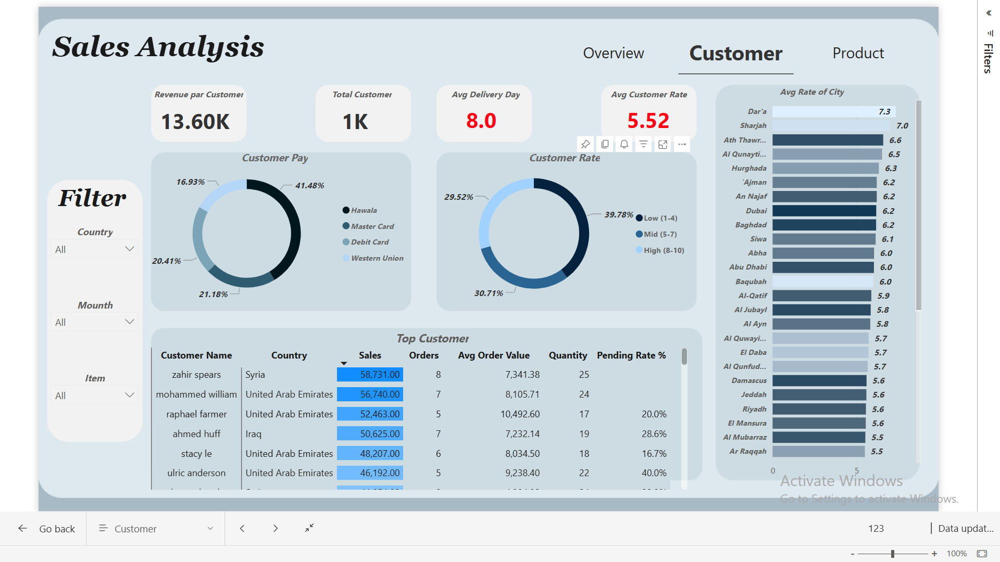
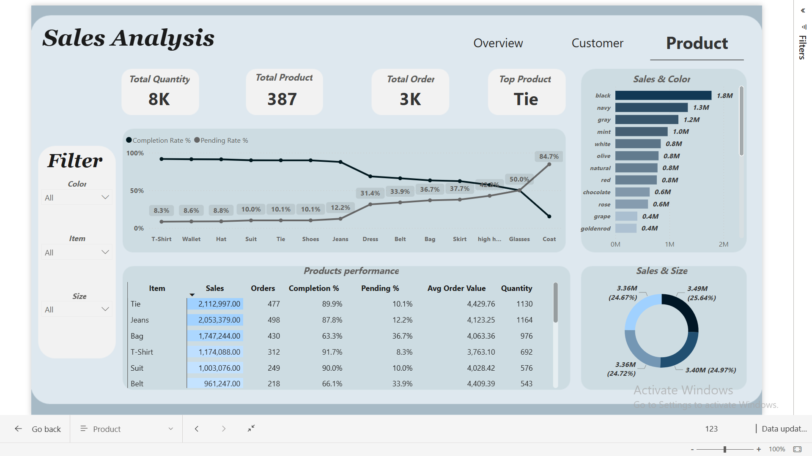
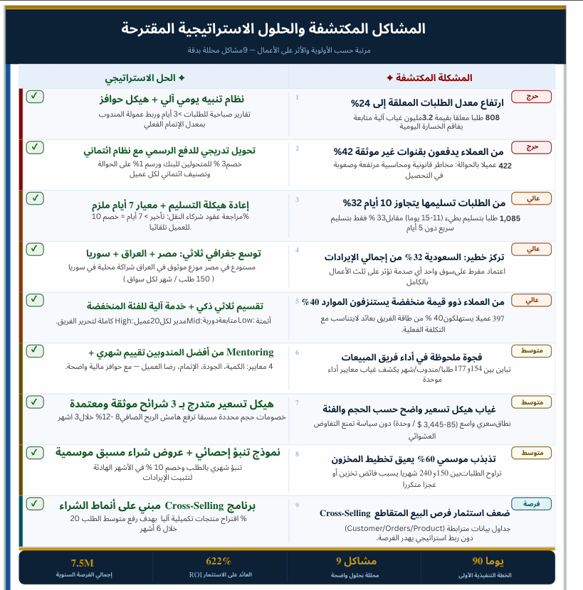

Overview
This project turns one sales dataset into two deliverables. First, a 3-page interactive Power BI dashboard — Overview, Customer, and Product — tracking $13.6M in sales across five countries: Saudi Arabia, Syria, UAE, Iraq and Egypt. Second, a written strategic audit that goes a layer deeper into the same business, built in Excel: nine structural problems, ranked by urgency and impact, each paired with a fix and a 90-day roadmap.
Business Problem
With $13.6M in sales spread across five markets and 387 products, there was no single place to see where that revenue actually concentrated, which markets converted best, or who the highest-value customers were. And underneath those visible numbers sat risk that a dashboard alone doesn't surface: suspended orders sitting untracked, customers paying through unverifiable channels, slow deliveries, a dangerous concentration in a single market, and a large low-value customer segment quietly consuming the team's time.
The goal was to answer both layers from the same data — how much are we selling and is it completing or cancelling, who is buying and how satisfied are they — and then, one level deeper, which of these patterns are actual business risks worth fixing first.
Data Cleaning
Loaded and modeled directly in Power BI: standardized country and payment-method labels, built a date table to support month-level filtering, and modeled relationships between the Orders, Customers and Products tables — so Overview, Customer, and Product pages could all share the same five slicers (Country, Month, Item, Size, Color) without duplicating logic.
The same underlying business data was cleaned and restructured in Excel: consolidating inconsistent order-status labels into a single suspended / completed / cancelled taxonomy, standardizing currency and date fields, and building pivot tables to segment customers, regions and product categories ahead of the diagnostic pass.
Analysis Process
The dashboard was structured around three linked questions, one per page. Overview: total sales, completion vs. cancellation, and order management by country. Customer: revenue per customer, payment method mix, delivery time, and satisfaction ratings by city. Product: completion and pending rate by item, sales by color, and sales by size — all sharing the same slicers, so a pattern noticed on one page could be cross-checked on another.
The strategic audit then took the same business one level deeper: isolating nine specific risk metrics, quantifying their size and revenue exposure, ranking each by urgency — Critical, High, Medium, or Opportunity — and pairing every one with a strategic fix and a measurable recommendation, closing with a single 90-day priority roadmap.
Tools Used
Two tools, one underlying business — the dashboard lives in Power BI, the audit in Excel.
Dashboard & Report




Key Insights
Saudi Arabia generated $4,674,666 across 1,177 orders — the top market by revenue, order count and customer count (348), ahead of Syria ($3.28M), UAE ($2.45M), Iraq ($1.85M) and Egypt ($1.36M).
Tie ($2,112,997, 1,130 units) and Jeans ($2,053,379, 1,164 units) lead the product board — and Tie also carries the highest completion rate of the top items at 89.9%.
The cancelled rate barely moves across markets — 23.7% in Saudi Arabia, 23.9% in Syria, 24.4% in UAE, 23.7% in Iraq, 25.3% in Egypt — pointing to a platform-wide pattern rather than a single weak market.
Bag ($1.75M) completes at only 63.3% (36.7% pending) and Belt ($961K) at 66.1% (33.9% pending) — both well below Tie, Suit and T-Shirt, which all complete above 89%.
39.78% of customers rate their experience Low (1–4), versus 30.71% Mid (5–7) and 29.52% High (8–10) — and average delivery time sits at 8.0 days, with an average customer rating of 5.52.
41.48% of customers pay via Hawala (money transfer), ahead of Debit Card (21.18%), Master Card (20.41%) and Western Union (16.93%) — a notable lean toward manual/informal payment over cards.
808 suspended orders worth $3.2M. Without a daily order-status tracking mechanism, the real loss stays hidden behind the headline revenue figure.
422 customers pay via manual transfer — carrying higher legal and accounting risk and making collection harder.
1,085 orders ship in 11–15 days, versus only 33% delivered fast, in under 5 days.
Excessive reliance on a single market creates a shock risk that could affect a third of the entire business at once.
397 customers consume 40% of the team's capacity for a return that doesn't justify the actual cost of servicing them.
Order volume per rep ranges from 154 to 177 a month, revealing the absence of unified performance standards.
Per-unit pricing ranges from $85 to $3,445 with no policy preventing ad-hoc negotiation.
Monthly orders swing between 150 and 240, causing repeated overstocking or shortages.
Customer, order and product data are already linked in the model but not used strategically to drive additional purchases.
Business Recommendations
- Treat the ~24% cancellation rate as a platform-wide issue rather than a market-specific one, given how consistent it is from Egypt to Saudi Arabia — start by auditing checkout and payment friction rather than individual-market operations.
- Prioritize fulfillment fixes for Bag and Belt first — they combine strong revenue with the weakest completion rates on the product board.
- Investigate reconciliation and collection risk on Hawala payments, given they represent the largest single payment method at 41.48% of customers, and consider a small incentive to shift volume toward trackable digital payments.
- Set a service-level target to bring average delivery time down from 8.0 days, and track its effect on the 5.52 average customer rating.
- Double down on Saudi Arabia and the Tie/Jeans lines in the near term — they are the clearest, most consistent performers across every page of the dashboard.
1. Automated daily order-status alerts
Critical2. Shift customers onto formal payment
Critical3. Restructure delivery around a 7-day standard
High4. Expand into Egypt, Iraq and Syria
High5. Segment customers into three tiers
High6. Mentor reps against four clear metrics
Medium7. Introduce a documented 3-tier pricing structure
Medium8. Forecast demand and smooth seasonality
Medium9. Launch a purchase-pattern cross-selling program
OpportunityAll nine fixes are sequenced into a single 90-day first executive plan in the full report above.
Projected Impact
These are the audit's projected figures for its proposed 90-day roadmap — not yet-implemented outcomes.